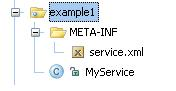
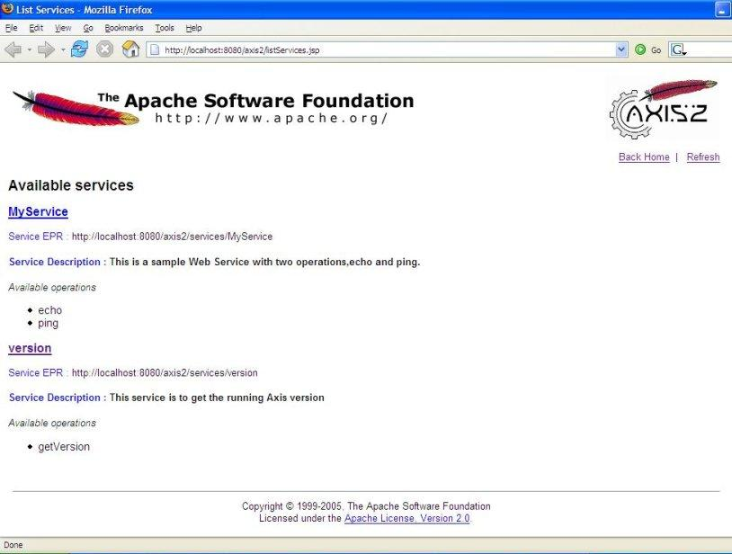

Writing Web Services Using Apache Axis2's Primary APIs
Apache Axis2 dispatches a component called MessageReceiver when Receiving a Message to the server. Apache Axis2 provides different implementations of this class and it can be configured by adding a messageReceiver tag to services.xml. Apache Axis2 provides an implementation for a class of Message receivers called RawXml Message receivers. They work at the XML level and can only handle OMElements as parameters. This section explains how to write a service using them.
In our example, the Web service will have two operations.
public void ping(OMElement element){} //IN-ONLY operation, just accepts the OMElement and does some processing.
public OMElement echo(OMElement element){}//IN-OUT operation, accepts an OMElement and
// sends back the same again
How to Write a Web Service?
Writing a new Web service with Apache Axis2 involves four steps:- Write the Implementation Class.
- Write a services.xml file to explain the Web service.
- Create a *.aar archive (Axis Archive) for the Web service.
- Deploy the Web service.
Step1: Write the Implementation Class
An implementation class has the business logic for the Web service and implements the operations provided by the Web service. Unless you have data binding, the signature of the methods can have only one parameter of the type OMElement. OM stands for Object Model (also known as AXIOM - AXis Object Model) and refers to the XML infoset model that is initially developed for Apache Axis2. DOM and JDOM are two such XML models conceptually similar to OM as an XML model by its external behavior, but considering the deep down implementation OM is very much different to others. OMElement is the basic representation of the XML infoset element in OM.For more details on OMElement see the Axiom User Guide.
public class MyService{
public void ping(OMElement element){
// Business Logic
......
}
public OMElement echo(OMElement element){
......
}
}
Step2: Write the services.xml file
"services.xml" has the configuration for a Web service. Each Web service, deployed in Apache Axis2 , must have its configuration in "services.xml". The configuration for MyService is as follows:
<service >
<description>
This is a sample Web service with two operations, echo and ping.
</description>
<parameter name="ServiceClass">userguide.example1.MyService</parameter>
<operation name="echo">
<messageReceiver class="org.apache.axis2.receivers.RawXMLINOutMessageReceiver"/>
<actionMapping>urn:echo</actionMapping>
</operation>
<operation name="ping">
<messageReceiver class="org.apache.axis2.receivers.RawXMLINOnlyMessageReceiver"/>
<actionMapping>urn:ping</actionMapping>
</operation>
</service>
The above XML tags can be explained as follows:
1. The description of the service class is provided in the description tag.
<service >
<description>
This is a sample Web service with two operations, echo and ping.
</description>
2. The name of the service class is provided as a parameter.
<parameter name="serviceClass">userguide.example1.MyService</parameter>
3. The "operation" XML tag describes the operations that are available in this service with respective message receivers.
<operation name="echo">
<messageReceiver class="org.apache.axis2.receivers.RawXMLINOutMessageReceiver"/>
<actionMapping>urn:echo</actionMapping>
</operation>
<operation name="ping">
<messageReceiver class="org.apache.axis2.receivers.RawXMLINOnlyMessageReceiver"/>
<actionMapping>urn:ping</actionMapping>
</operation>
4. Every operation must map to a corresponding MessageReceiver class. After a message is processed by the handlers, the Axis2 engine hands it over to a MessageReceiver.
5. For the "echo" operation, we have used a RawXMLINOutMessageReceiver since it is an IN-OUT operation. For the IN-ONLY operation "ping", we have used RawXMLINOnlyMessageReceiver as the message receiver.
6. The actionMapping is required only if you want to enable WS-Addressing. This will be used later in this user guide.
7. You can write a services.xml file to include a group of services instead of a single service. This makes the management and deployment of a set of related services very easy. At runtime, you can share information between these services within a single interaction using the ServiceGroupContext. If you hope to use this functionality, the services.xml file should have the following format.
<ServiceGroup>
<service name="Service1">
<!-- details for Service1 -->
</service>
<service name="Service2">
<!-- details for Service2 -->
</service>
<module ref="ModuleName" />
<parameter name="serviceGroupParam1">value 1</parameter>
</serviceGroup>
Note : The name of the service is a compulsory attribute.
Step3: Create the Web Service Archive
Apache Axis2 uses the ".aar" (Axis Archive) file as the deployment package for Web services. Therefore, for MyService we will use "MyService.aar" with the "services.xml" packaged in the META-INF in the directory structure shown below. Please note that the name of the archive file will be the same as that of the service only if the services.xml contains only one service element.

To create the archive file, you can create a .jar file containing all the necessary files and then rename it to a .aar file. This archive file can be found in the "Axis2_HOME/samples/userguide" directory. This file has to be deployed now.
Step4: Deploy the Web Service
The service can be deployed by dropping the ".aar" file into the "services" directory in "/webapps/axis2/WEB-INF" of your servlet container. Start the servlet container (if you have not already started), click the link "Services" on the Home Page of Axis2 Web Application (http://localhost:8080/axis2) and see whether MyService is deployed properly. If you can see the following output, then you have successfully deployed MyService on Apache Axis2. Congratulations !!

Note: Apache Axis2 provides an easy way to deploy Web services using the "Upload Service" tool on the Axis2 Web Application's Administration module. Please refer to the Web Administration Guide for more information.